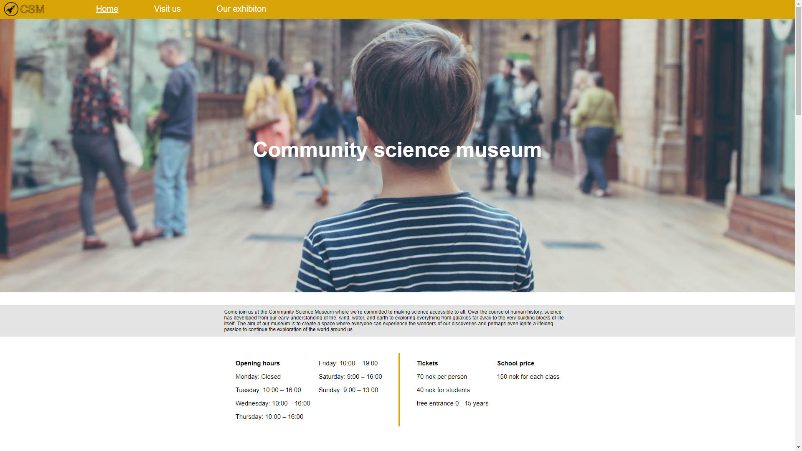

community-science-museum-log

- There is added border around every catagory with box shadow on the front page to make the site look more
alive rather
then just a flat design.
- Buttons do now have a pointer cursore on hover to better show the user that it is clickable.
- There was a drop down manu in the navigation bar which is now removed because it was just an repeat of
the same navigation that is already there.
- The welcomening text had a 10 px size in the mobile version and some people had issues reading it, so
now it is change to a bigger size.
- Opening hours and tickets had an issue that it appeard to the left in some browsers, which is now fixed
with grid and justify content center.
- Visit us, guided tours and night at the mesuem page had an issue that it was not in center in some
browsers, which is now fiexed.
- Explore page is no longer having an issue with a big gap in some browers, the reason was that the margin
was set to auto and are now fixed.
- There was alot of horizontal scroll bars on different pages, they are now removed.
- All li's outside the header was missing a ul tag and instead a div around them, this is now fiexd and
all li have ul to them.
Go back